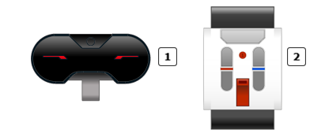
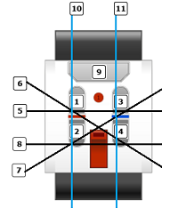
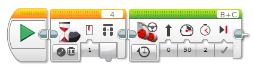
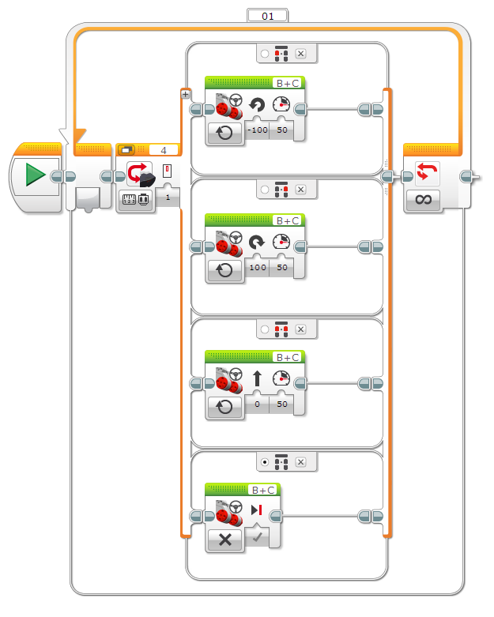

					<table cellpadding="0" cellspacing="0" border="0"><tbody><tr><td>
	
						<h1>使用红外传感器“远程”模式<a name="top"></a></h1>
		<div id="block_878" class="block blockHeader">
				<div class="description"><br>
<br>
 红外传感器<br>
 远程红外信标<br>
<br>
在“远程”模式中，红外传感器可以检测远程红外信标（IR 信标）上的哪个按钮受到按压。还可以检测同时按压两个按钮的特定组合的情况。例如，可以使用“远程”模式对机器人进行远程控制。</div>
			</div>
	<div id="block_879" class="block blockStep">
		<div class="title"></div>
		<div class="description">IR 信标具有频道选择器，可用于为信号选择四个不同频道之一。红外传感器只会检测来自指定频道的信号。</div>
	</div>
	<div id="block_880" class="block blockTip">
		<div class="title">提示和技巧</div>
		<div class="boxContent">
			<div class="description">如果通过两个不同 IR 信标控制两个机器人，则应使用不同频道。否则，一个信标会在其频道上控制所有机器人。</div>
				</div>
	</div>
	<div id="block_882" class="block blockChaptor">
		<div class="title"><a name="InfraredSensorRemoteModeData" style="position:relative; top:-10px;"></a>红外传感器“远程”模式数据</div>
		<div class="description">在“远程”模式中，红外传感器会提供以下数据：</div>
	</div>
	<div id="block_883" class="block blockTable ">
		<table class="blockTable">
		

			<tbody><tr>
<th>数据</th><th>类型</th><th>范围</th><th>备注</th>			</tr>
<tr><td>按钮 ID <a name="ButtonID" style="position:relative; top:-10px;"></a></td><td>数字</td><td>0 － 11</td><td>标识在 IR 信标上按压的按钮或按钮组合。<br>
<br>
0 = 无按钮（并且“信标”模式关闭）<br>
1 = 按钮 1<br>
2 = 按钮 2<br>
3 = 按钮 3<br>
4 = 按钮 4<br>
5 = 按钮 1 和按钮 3 同时<br>
6 = 按钮 1 和按钮 4 同时<br>
7 = 按钮 2 和按钮 3 同时<br>
8 = 按钮 2 和按钮 4 同时<br>
9 =“信标”模式开启<br>
10 = 按钮 1 和按钮 2 同时<br>
11 = 按钮 3 和按钮 4 同时<br>
 <br>
</td></tr>		</tbody></table>
	</div>
	<div id="block_884" class="block blockTip">
		<div class="title">提示和技巧</div>
		<div class="boxContent">
			<div class="description">“信标模式”按钮（按钮 ID = 9）的作用与其他四个按钮不同。当按压“信标模式”按钮时，信标开始连续发射，直至再次按压“信标模式”按钮以关闭它。其他四个按钮仅在按下时才发射，并在松开按钮时停止发射。</div>
				</div>
	</div>
	<div id="block_886" class="block blockChaptor">
		<div class="title"><a name="ExamplesUsingTheInfraredSensorInRemoteMode" style="position:relative; top:-10px;"></a>“远程”模式的红外传感器使用示例</div>
		<div class="description">下面是有关如何使用“远程”模式的红外传感器的一些示例。</div>
	</div>
	<div id="block_887" class="block blockExample">
		<div class="title">示例 1：远程启动按钮</div>
		<div class="image"></div>
		<div class="description">此程序使机器人等待，直至 IR 信标上的某个按钮受到按压（使用频道 1），然后向前驱动 2 秒。它使用“红外传感器 － 更改 － 远程”模式的<a href="./index.html?id=Wait">等待</a>模块。如果在开始时未按压任何按钮，则这会等待，直至 IR 信标上的任何按钮受到按压</div>
	</div>
	<div id="block_888" class="block blockExample">
		<div class="title">示例 2：远程控制驱动</div>
		<div class="image"></div>
		<div class="description">下面的程序可以通过来自 IR 信标的远程控制来驱动机器人。它使用“红外传感器 － 测量 － 远程按钮”模式的<a href="./index.html?id=CaseSelector">切换</a>，根据 IR 信标上受到按压的按钮在四种不同驱动运动中进行选择。可以通过按压左上和右上方向按钮来分别向左和向右转向，并通过同时按压这两个按钮来直行。当松开所有按钮时，机器人会停止。<br>
<br>
</div>
	</div>
	<div id="block_889" class="block blockChaptor">
		<div class="title"><a name="InfraredSensorRemoteModeBlocksAndModes" style="position:relative; top:-10px;"></a>红外传感器“远程”模式模块和模式</div>
		<div class="description">下表显示可以与“远程”模式的红外传感器一起使用的所有编程模块和模式。</div>
	</div>
	<div id="block_890" class="block blockTable ">
		<table class="blockTable">
		

			<tbody><tr>
<th>模块</th><th>模式</th><th>用途</th>			</tr>
<tr><td><a href="./index.html?id=Wait">等待</a></td><td>红外传感器 － 比较 － 远程</td><td>等待 IR 信标上的指定按钮受到按压。还可以等待指定按钮集合中的一个按钮受到按压。</td></tr><tr><td><a href="./index.html?id=Wait">等待</a></td><td>红外传感器 － 更改 － 远程</td><td>等待 IR 信标上的任何按钮受到按压，或等待按钮状态更改。</td></tr><tr><td><a href="./index.html?id=LoopCondition">循环</a></td><td>红外传感器 － 远程</td><td>重复模块序列，直至 IR 信标上的指定按钮受到按压（或直至指定按钮集合中的一个按钮受到按压）。</td></tr><tr><td><a href="./index.html?id=CaseSelector">切换</a></td><td>红外传感器 － 测量 － 远程</td><td>根据在 IR 信标上按压的按钮，从两个或更多模块序列中进行选择。</td></tr><tr><td><a href="./index.html?id=CaseSelector">切换</a></td><td>红外传感器 － 比较 － 远程</td><td>根据是否在 IR 信标上按压了指定按钮（或是否按压了指定按钮集合中的一个），在两个模块序列之间进行选择。</td></tr><tr><td><a href="./index.html?id=InfraredSensor">红外传感器</a></td><td>测量 － 远程</td><td>通过数字数据线获取 IR 信标上当前按压的按钮的按钮 ID。</td></tr><tr><td><a href="./index.html?id=InfraredSensor">红外传感器</a></td><td>比较 － 远程</td><td>测试 IR 信标上的指定按钮（或指定按钮集合中的一个按钮）是否受到按压，并通过逻辑数据线获取结果。</td></tr>		</tbody></table>
	</div>
	
			<div id="quick">
				<div class="header"><a href="./index.html?id=UsingSensors_Remote#header">IR“远程”模式</a></div>
					<div class="quickText">快速链接</div>
					
					<ul>
	<li><a href="./index.html?id=UsingSensors_Remote#InfraredSensorRemoteModeData">红外传感器“远程”模式数据</a></li><li><a href="./index.html?id=UsingSensors_Remote#ExamplesUsingTheInfraredSensorInRemoteMode">“远程”模式的红外传感器使用示例</a></li><li><a href="./index.html?id=UsingSensors_Remote#InfraredSensorRemoteModeBlocksAndModes">红外传感器“远程”模式模块和模式</a></li>					</ul>
			</div>
	
	</td></tr></tbody></table>